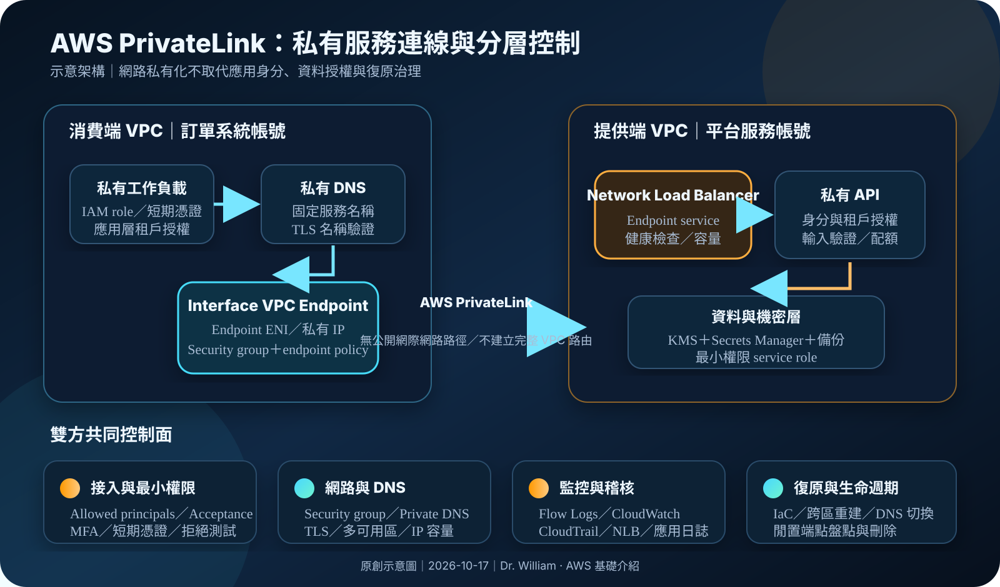

AWS PrivateLink：私有服務連線、端點治理與跨帳號隔離
AWS PrivateLink 讓 VPC 內的工作負載以私有 IP 存取 AWS 服務、跨帳號端點服務或支援的合作夥伴服務，不必把應用流量送上公開網際網路。私有連線只處理網路可達性；身分授權、端點政策、服務端權限、DNS、資料保護、監控與復原仍需分層治理。
作者：Dr. William｜查閱與發布：2026-10-17
服務定位
AWS PrivateLink 是 VPC 私有連線技術。消費端在自己的子網建立 VPC endpoint；對 interface endpoint 而言，AWS 會在選定子網建立具有私有 IP 的 endpoint network interface。應用程式透過端點 DNS 或啟用後的 private DNS 存取服務，流量在 AWS 網路內送往服務提供者。
提供者可把由 Network Load Balancer 前端的 TCP 或 TLS 服務發布為 endpoint service，授權指定 AWS principals 建立連線。PrivateLink 不需要建立 VPC peering，也不要求雙方 CIDR 不重疊；消費端只看見端點，不會取得提供者 VPC 的一般路由可達性。這種單向服務暴露適合縮小橫向移動面，但不等於自動完成應用層驗證或資料授權。
核心概念與服務邊界
連線元件
- Service consumer：建立並支付 VPC endpoint，管理子網、security group、DNS、endpoint policy 與用戶端權限。
- Service provider：管理 endpoint service、允許的 principals、連線接受、Network Load Balancer、target group 與後端服務。
- Interface endpoint：在消費端子網建立 endpoint network interface；每個啟用的可用區應有適當子網與容量。
- Endpoint service：由提供者公開的服務入口，通常由 Network Load Balancer 支援，可供同帳號或跨帳號消費。
- Endpoint connection：連結消費端端點與提供者服務；提供者可要求手動接受或設定自動接受。
- Private DNS：把既有服務名稱解析到私有端點；需驗證名稱所有權、VPC DNS 設定與 split-horizon 行為。
安全與流量邊界
- Security group：套用在 interface endpoint，限制哪些來源與連接埠能進入端點；它不是服務端業務授權。
- Endpoint policy：對支援的 AWS 服務限制可透過端點執行的 principal、action 與 resource；不會覆蓋 IAM 或資源政策。
- Allowed principals：提供者限制誰能發起 endpoint connection；若使用萬用 principal，必須依 AWS 官方要求另加來源限制。
- Acceptance：對第三方或跨帳號服務保留人工或自動化審批，可避免未核准帳號直接接入。
- Source identity：服務端可取得部分連線來源資訊，但仍應在應用層驗證租戶、使用者與操作權限。
- Observability：CloudWatch 指標、VPC Flow Logs、Network Load Balancer 指標、服務日誌與 CloudTrail 共同建立證據鏈。
適合與不適合的使用情境
適合
- 私有子網需要存取支援 interface endpoint 的 AWS API，並希望減少 NAT gateway、公開 IP 與網際網路出口依賴。
- 企業共用服務或 SaaS 供應商要把單一服務提供給多個 VPC 或多個 AWS 帳號，但不希望建立完整網路互通。
- 消費者與提供者的 CIDR 重疊，無法直接使用傳統路由型 VPC peering。
- 需要讓每個消費 VPC 以 security group、endpoint policy、私有 DNS 與帳號治理建立獨立控制面。
- 希望只暴露特定服務與連接埠，而不是讓消費者存取提供者 VPC 的其他網段。
不適合或不能單獨完成
- 需求是任意雙向網路、廣播、多播、整個 CIDR 路由交換或大量東西向網段互通；應評估 Transit Gateway、VPC peering 或其他網路架構。
- 應用依賴服務端主動建立回程連線到消費端，且無法改成由消費端發起或透過獨立通道處理。
- 只要建立端點就期待自動取得 AWS API 權限；IAM identity policy、resource policy 與 endpoint policy 仍需同時允許。
- 希望 PrivateLink 自動完成 TLS 憑證、使用者驗證、租戶隔離、輸入驗證、速率限制或資料列授權。
- 低流量、少量服務的成本模型無法承擔每可用區端點時數、資料處理、Network Load Balancer、DNS、日誌與跨區資料傳輸。
示意故事案例：跨帳號支付查詢服務
以下為示意案例，不代表特定企業或正式部署。 一家電商把支付查詢服務放在「平台服務帳號」，前端訂單系統分散於開發、測試與正式帳號。平台團隊不建立跨帳號全網段路由，而是在兩個可用區部署後端服務，以 internal Network Load Balancer 建立 endpoint service，只允許組織內經核准的正式工作負載角色所屬帳號建立連線。
正式訂單 VPC 在兩個可用區建立 interface endpoints，端點 security group 只允許指定應用 security group 連至 TCP 443。提供者啟用 connection acceptance，審批流程核對帳號、環境、服務擁有者、資料分類與到期日。私有 DNS 讓應用使用固定內部名稱，但 TLS 憑證、主機名稱與健康檢查仍由平台團隊管理。
訂單應用透過 IAM role、MFA 保護的管理流程與短期憑證部署，正式環境不保存長期 Access Key。API 每次仍驗證 workload identity、租戶與查詢範圍；資料庫憑證由 Secrets Manager 提供，金鑰與備份使用 KMS。VPC Flow Logs、Network Load Balancer、服務日誌、CloudWatch 告警與 CloudTrail 共同記錄端點建立、政策變更、異常連線、拒絕與高流量。第二區域保留可重建的 IaC、DNS 切換程序與資料復原機制，並定期演練。

建置與運作流程
- 界定服務契約：確認消費者、提供者、帳號、區域、協定、連接埠、DNS、流量、延遲、資料分類、RTO、RPO 與退出條件。
- 選擇正確端點類型：依目標是 AWS 服務、第三方 endpoint service、資源、網段或虛擬網路設備，選擇 interface、gateway、resource、service network、tunnel 或 Gateway Load Balancer endpoint。
- 部署提供端：將服務放在至少兩個可用區，建立健康檢查、容量保護與 Network Load Balancer，僅開放必要 listener 與 target。
- 建立 endpoint service：指定負載平衡器、可用區、IP address type、允許 principals 與 acceptance 設定，避免無邊界公開服務。
- 治理消費端：在需要的可用區選定子網，預留 endpoint network interface IP，建立專用 security group 與命名標準。
- 設定政策：對支援的 AWS 服務使用最小 endpoint policy；同時收斂 IAM identity policy、resource policy、KMS key policy 與服務端授權。
- 設計 DNS：驗證 private DNS 名稱所有權、VPC DNS hostnames／resolution、Route 53 Resolver、混合 DNS 與故障切換。
- 保護管理面：管理者使用 IAM Identity Center 或聯合登入、MFA 與短期憑證；不建立長期 Access Key 執行日常端點管理。
- 保護機密：應用憑證放入 Secrets Manager 或 Parameter Store，依資料敏感度使用 KMS；不得把機密寫入 user data、標籤、DNS、日誌或文件。
- 建立監控：啟用 VPC Flow Logs，監控端點、Network Load Balancer、target health、拒絕、位元組、連線、延遲與服務錯誤。
- 建立稽核：以 CloudTrail 集中記錄 Create、Modify、Accept、Reject、Delete 與政策變更，對未授權帳號和組態漂移告警。
- 測試拒絕路徑：驗證未核准帳號、錯誤 security group、被拒 IAM、錯誤 DNS、TLS 失敗、單區故障與 target 不健康。
- 管理生命週期：為端點設定擁有者、成本中心、用途、到期日與刪除流程，定期移除閒置端點、過期連線與不再需要的 principals。
- 演練復原：以 IaC 在第二區域重建端點服務與消費端端點，驗證 DNS、憑證、依賴服務、資料還原與 RTO／RPO。
成本、可用性與維運考量
PrivateLink 常見成本包含每個 VPC endpoint 在每個可用區的端點時數與資料處理量；提供端還可能包含 Network Load Balancer、LCU、跨可用區或跨區資料傳輸、Route 53、Flow Logs、CloudWatch 與 KMS。部分 AWS 服務可能由服務提供者支付端點費用，實際責任必須逐項查閱服務文件與帳單。端點保留但沒有流量時仍可能持續計費，閒置資源應定期盤點與刪除。
消費端若只在單一可用區建立 interface endpoint，該區域故障可能中斷存取；在多個可用區建立端點可提高可用性，但也增加端點時數。提供端應在至少兩個可用區部署健康 target，避免 Network Load Balancer 雖可達、後端卻集中於單一故障域。用戶端 DNS、連線池、timeout、retry 與熔斷也需配合設計。
PrivateLink 不會跨區自動複寫 endpoint service、DNS、TLS 憑證或後端資料。區域復原通常需要在第二區域部署服務與端點服務、重新授權消費者、建立區域端點並切換 DNS。若採跨區 PrivateLink 能力或其他跨區路徑，仍須評估支援範圍、延遲、資料傳輸費與區域故障時的控制面依賴。
PrivateLink 特有資安風險與控制
- 把私有網路誤當成可信身分：端點只證明流量來自某個連線路徑；API 仍須驗證 workload、使用者、租戶與操作權限。
- Allowed principals 過廣：只允許明確帳號或角色，使用組織條件與審批；避免無條件允許所有 principals。
- Connection acceptance 關閉：若業務不需自助接入，保留接受機制，核對帳號、環境、用途與資料分類後再核准。
- Interface endpoint security group 過寬：來源優先引用應用 security group，只開必要連接埠，不以整個 VPC CIDR 作永久預設。
- Endpoint policy 使用 Full Access：對支援政策的 AWS 服務限制 principal、action、resource 與必要條件，並與 IAM、resource policy 共同測試。
- 誤解 endpoint policy：它是附加邊界，不會授予原本沒有的 IAM 權限，也不能取代 S3 bucket、KMS key 或其他服務資源政策。
- Private DNS 劫持或錯誤解析：驗證名稱所有權、Route 53 Resolver 規則、split-horizon、搜尋網域與混合 DNS，防止流量送往錯誤端點。
- TLS 主機名稱不符：私有 DNS、憑證 SAN、listener 與後端協定需一致；PrivateLink 本身不會自動為自建服務產生端到端 TLS。
- 來源 IP 假設錯誤：依 endpoint ID、proxy protocol、應用身分或服務支援的來源資訊建立授權，不把可能變化的私有 IP 當永久身分。
- 提供端暴露過多連接埠：Network Load Balancer listener、target group 與服務防火牆只保留必要協定，不以單一 endpoint service 暴露整台主機。
- 後端服務未分租戶：跨帳號接入仍須在應用與資料層執行租戶隔離、輸入驗證、配額與速率限制。
- 端點成為資料外洩路徑：以 Service Control Policies、VPC endpoint policy、DNS Firewall、Network Firewall 與資源政策限制可建立及可使用的服務。
- 觀測只看公開出口：PrivateLink 流量不經 NAT 或 internet gateway，必須另行收集 Flow Logs、端點、NLB 與應用日誌。
- 日誌洩漏敏感資料：不記錄 credential、Access Key、Secret Key、Token、密碼、cookie 或完整敏感 payload；日誌集中加密並最小化查閱。
- 單區端點或單區 target：消費端與提供端都部署多可用區，監控健康狀態並測試區域內故障切換。
- 組態只存在主控台：以 IaC 管理端點、服務、principals、security group、DNS、政策與告警，使用 AWS Config 或等效控制偵測漂移。
- 機密硬編碼於服務：由執行角色從 Secrets Manager 或 Parameter Store 取得，使用 KMS、輪替與最小權限。
- 跨區復原只重建網路：同步考量憑證、DNS、應用、資料庫、金鑰、Secrets、監控與消費端重新連線。
共同責任邊界
AWS 負責 PrivateLink 受管基礎、端點網路介面生命週期、AWS 網路與底層實體安全。消費者負責端點類型、VPC、子網、IP 容量、security group、endpoint policy、DNS、IAM、用戶端設定、監控與刪除。提供者負責 endpoint service、允許 principals、connection acceptance、Network Load Balancer、target health、應用授權、TLS、資料保護、容量與服務可用性。
雙方需明確約定服務名稱、帳號、區域、連接埠、DNS、身分、資料分類、日誌、事件通報、變更、容量、RTO、RPO 與終止流程。管理帳號應採聯合登入、MFA、短期憑證與最小權限；正式 credential、Access Key、Secret Key、Token、密碼或 cookie 不得進入原始碼、IaC 變數、標籤、日誌或公開文件。
上線與維運可執行檢查清單
- □ 已確認需求需要 PrivateLink，而不是完整路由互通、Transit Gateway、VPC peering 或公開 API。
- □ 已選擇正確 VPC endpoint 類型，並記錄各端點的服務擁有者、用途、成本中心與到期日。
- □ 提供端服務與健康 targets 分散於至少兩個可用區，容量、timeout、retry 與熔斷已測試。
- □ Endpoint service 只允許核准的 principals，connection acceptance 符合接入治理需求。
- □ Interface endpoints 建立於需要的可用區，子網保留足夠 IP，不與無關工作負載混用規則。
- □ Endpoint security group 只允許指定來源與必要連接埠，未永久開放整個組織或網際網路來源。
- □ Endpoint policy 已限制必要 principal、action、resource，並與 IAM 及資源政策完成允許／拒絕測試。
- □ 管理者使用聯合登入、MFA 與短期憑證，root 與長期 Access Key 不用於日常操作。
- □ Private DNS、憑證名稱、Route 53 Resolver、混合 DNS 與故障切換已在正式網路路徑驗證。
- □ 應用層仍驗證 workload、使用者、租戶、物件與操作權限，未只信任 endpoint ID 或來源 IP。
- □ 資料傳輸使用 TLS；儲存、日誌、備份與機密依分類使用 KMS。
- □ Secrets 由 Secrets Manager 或 Parameter Store 提供，程式碼、IaC、標籤及日誌不含任何正式機密。
- □ VPC Flow Logs、Network Load Balancer、target、服務錯誤與異常流量已有 CloudWatch 告警。
- □ CloudTrail 集中記錄端點與端點服務建立、修改、接受、拒絕、政策與刪除事件。
- □ 已估算每可用區端點時數、資料處理、NLB、跨區／跨可用區、DNS、日誌與 KMS 費用。
- □ 已測試錯誤 DNS、未核准帳號、IAM 拒絕、security group 拒絕、target 不健康與單區故障。
- □ 端點、服務、principals、DNS、政策與告警皆納入 IaC，並有漂移偵測及變更審批。
- □ 不再使用的 endpoint、connection 與 principal 有自動盤點、通知及刪除程序。
- □ 第二區域可重建服務與端點，並已演練 DNS、憑證、資料、Secrets、KMS 與消費端切換。
AWS 官方一手來源
- What is AWS PrivateLink?（查閱：2026-10-17）
- AWS PrivateLink concepts（查閱：2026-10-17）
- Create an endpoint service（查閱：2026-10-17）
- Configure an endpoint service（查閱：2026-10-17）
- Manage DNS names for VPC endpoint services（查閱：2026-10-17）
- Control access to VPC endpoints using endpoint policies（查閱：2026-10-17）
- CloudWatch metrics for AWS PrivateLink（查閱：2026-10-17）
- Log AWS PrivateLink API calls using AWS CloudTrail（查閱：2026-10-17）
- Access AWS services using VPC endpoints（查閱：2026-10-17）
- Access AWS services through AWS PrivateLink（查閱：2026-10-17）
- Security in AWS PrivateLink（查閱：2026-10-17）
- AWS PrivateLink quotas（查閱：2026-10-17）
- AWS PrivateLink pricing（查閱：2026-10-17）
內容說明
本文依查閱日可用的 AWS 官方文件整理，作為基礎學習與架構討論材料；實際部署仍須依最新端點類型、服務支援、區域、配額、IP address type、Network Load Balancer、DNS、endpoint policy、跨區能力、價格、資料分類、合規要求與復原演練結果調整。